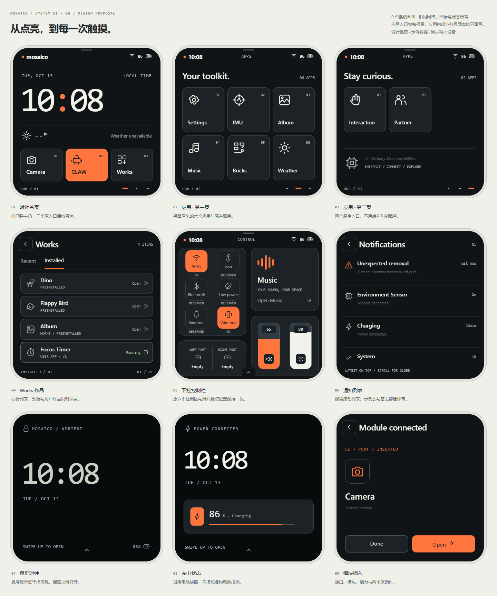

先说想法，不先选模式
手机 Agent 理解创作与修改意图。设备 Claw 有独立入口，执行者始终清楚。
YOUR POCKET HARDWARE STUDIO
在手机上说出意图，让 Mosaico 把它变成现实。
一个想法。一件作品。
无限种 Mosaico。从「生成贪食蛇」开始试试
MAKE SOMETHING REAL
一个小游戏，一只计时钟。
让手机 Agent 为身体创造新的本领。
你负责想象，Mosaico 负责发生。
ONE BODY, MORE POSSIBILITIES
原来的本领，加上你的新想法。
原有入口完整保留。打开与反馈为本地模拟，远程控制接口仍需接入。
YOUR PHYSICAL COMPANION
它在这里，等待下一个想法。
硬件规格概览 · 当前手机生成仅接入屏幕 / 触摸
相机、录音和外部执行器需单独授权。当前连接仅验证接口，不等于安全配对。
模型与接口设置、连接测试在这里管理。Key 不同步到设备。本原型不接收或存储密钥。
局域网传递应用，设备回传运行状态。
DESIGNED AROUND ONE CONTINUOUS LOOP
创作不在「生成完成」时结束，而在设备开始回应时成立。
手机 Agent 理解创作与修改意图。设备 Claw 有独立入口，执行者始终清楚。
生成、检查、部署、确认运行连续呈现。失败停在当前步骤，不让灵感重新开始。
作品保留版本与运行回执。断连保留上下文，物理设备继续自己的运行。
MOSAICO / SYSTEM UI · 06
设备系统视觉已整合到主设计稿：时钟、两页应用、Works、下拉控制栏、通知、息屏、充电和模块插入。保留原有 11 个主屏入口与 Works 预装作品；以下可直接切换和操作，数据为原型示例。

打开可交互设备设计稿 ↗